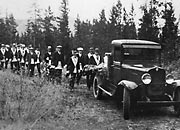
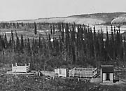
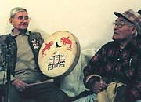
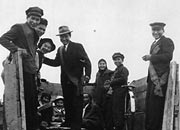
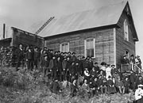
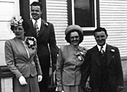

Dahyè sùkùsen
Baha’i prayer, in the Tagish language:
Proceedings of the Tagish Literacy Workshop.
First Nations people believe that a close bond exists between human beings and the animals on which they depend for survival. They have important oral traditions about their world and those who live in it. They feel that powerful spirits have an influence on the natural world and on them.
Traditional beliefs began to be influenced by Christian theology in the middle of the 19th century, although First Nations people have maintained many of their spiritual observances. Potlatches are particularly important events; they are given to mark a death, and as memorial ceremonies held one or two years after someone’s death. They can also honour other important milestones, such as naming a child, or to celebrate a first hunt. Potlatches are given by one clan on behalf of the opposite clan. They are times of feasting, singing, dancing and gift-giving.
Over the years, the Yukon has been home to people with a wide variety of religious faiths. Church representatives first came north as missionaries to work with the First Nations people. Anglican Archdeacon Robert McDonald was one of the first to establish a mission, settling at Fort Yukon in 1862. The Catholic Church was also active in the north. As early as the gold rush, people with many different faiths began to make their homes in the territory. This rich diversity of spirituality continues today.
Continue to Jobs, careers and tradesBlessed is the spot
(Above) Church workers had to be mobile and accessible to keep up with their congregations. Reverend Robert Ward’s tent and wall of cordwood at his camp at Lower Laberge on his first trip from Carmacks to Lower Laberge, June 1933.
YA, Ward collection #8774
Masons at a funeral at the cemetery, downtown Whitehorse, c.1930.
YA, Good collection #9606
First Nations graves near Whitehorse, 1915. Early wooden gravehouses were made of rough-split and adzed logs; later ones were made from sawn lumber or clapboard.
YA, Janes collection #4331
Elders George Dawson and Frankie Jim at the potlatch for Johnnie Johns.
YA, L. Johnson collection
Group in back of truck, on their way to a wedding, Teslin.
YA, Drean collection, 89/5 #2
A congregation gathers outside their church, probably in the Klondike gold fields, c.1900.
YA, Johns collection, 82/318 #140
Newlyweds Babe and Jimmy Marr (r) with Jimmy and Kay Smith on the steps of liquor store (where the Justice of the Peace was also located), June 13, 1947.
YA, Turner collection, 88/16 #81A